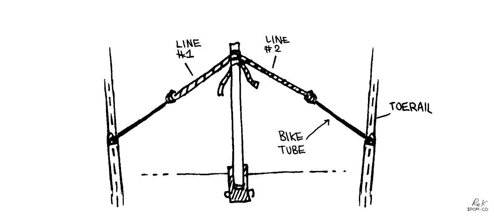

repair
- Maintenance checklist
- Effect of Combining Dissimilar Metals
- Cleaning
- Tool box
- Bikes on a boat
- Wood upkeep
Every object we buy is a potential burden, in terms of the physical and mental space the item occupies. Even when it passes out of our hands, whether it is sold, passed down, donated or discarded, the object still exists, while many more are manufactured. In his book The Long Way, Moitessier talks about the need to stop satisfying false needs and false joys, to instead focus on preserving nature. Preserving nature is our most worthy responsibility, and isn't compatible with an economy of "full consumption".
We have contributed our share of waste in the past, we have burdened others with objects when we reduced our own lives to fit onto a boat. Now, we do our best to avoid new items, and spend time seeking existing alternatives, or repairing broken items whenever possible. It is a challenge, our for-profit economy doesn't encourage thrift and care, it promotes off-the-shelf solutions, while making repair and thrift difficult, and unattractive.
Time is necessary to practice thrift and care, but it is a scarce resource. Work takes an ever-larger chunk out of the average person's day. Time did not used to be compartmentalized into work and non-work, "work" was once more intertwined with family, community and play. Now, "work" pays for outside entertainment, and life outside of work has lost vitality and meaning, it has ceased being a means to an end and become an end in itself. An economy that glorifies "work" and "infinite consumption" preaches that leisure is a commodity that people can consume rather than it being free time that they can enjoy. Today's pleasures are debited to the future, paid not in money, but in waste and misery. A purchase that was easy to make today, will be an inconvenience to someone, somewhere, later. Our membership in this world is never free.
We have to cherish nature, to foster its renewal, and to prioritize thrift and care rather than waste and excess. Maintenance and stewardship require something of us, we have responsibilities that lie beyond ourselves and our own profit. The farming phrase, “eyes to acres,” by Wes Jackson, says that in order to run a farm well, one has to be familiar with the environment, to be in touch with the little changes that occur every day. Only when we see land as a community, to which we belong, can we begin to use it with respect and love. This was an excerpt from Busy Doing Nothing, which we thought was worth re-printing here.
The land ethic simply enlarges the boundaries of the community to include soils, waters, plants, and animals, or collectively: the land. Land ethic changes the role of Homo sapiens from conqueror of the land community to plain member and citizen of it. It implies respect for his fellow-members, and also respect for the community as such.Aldo Leopold
Repair, reuse.
Doing maintenance and repairs yourself will bring the cost down. Offloading work to professionals if you can afford it is fine, but it's good to know how to take care of your boat. You may not always have access to workers if sailing to far-flung islands.
A failure to maintain items regularly will cost more later. We recommend keeping a log of the repairs, part replacements that is done to your boat. Many parts have a limited lifespan, so knowing when they were replaced last will help prevent breakages. If leaving for a big sailing trip with spares, install the spare and keep the other one as the spare. If you do this, you'll learn how to change the part and what tools you need to do the job.
When doing repairs, use quality materials and products, research them thoroughly before a project instead of relying on brand names.
maintenance checklist
Short list:
- Engine (see engine_care for detailed list)
- The boat’s hull (bottom) & topsides, see hauling out
- Electrical systems, see electrical refit
- Plumbing, see thruhulls
- Moving parts (hinges, tracks and zippers)
- Canvas and upholstery
Long list:
- Anchor chain
Check readability of depth markings, general link wear. - Anchor rope rode
Check for rope wear, check rope-to-chain connection, check condition and readability of depth markings. - Anchor shackles
Check pins, seizing wire condition. - Windlass
Service & washdown regularly or it will seize up, see windlass removal). - Deck winches
Clean(using a degreaser), re-apply with waterproof grease(calcium sulphonate for example) and light machine oil(on pawls). - Running rigging
Check for chafe in the rope covers. Wash lines in soapy water and rinse in fresh water. - Standing rigging
Check for cuts in the wire strands, inspect cotter pins and mast terminations. - Mast head
Lubricate sheaves, check rigging connections and masthead instruments for wear. - Chainplates
Check for pit corrosion & stretched bolt holes. Check connections to hull(look for stress marks). If going through deck re-bed chainplates with butyl tape to prevent water intrusion. - Check for galvanic corrosion between dissimilar metals
See effect of combining dissimilar metals. - Test both manual and automatic bilge pumps
Check fuses in automatic pumps, check that manual pump components work(otherwise replace bits using a service kit). - Test LPG and CO gas sensor
Test and replace if necessary - Thruhulls
Check for corrosion, check hose clamps, make sure seacocks move freely. - Plumbing
Check hose clamps for corrosion. Two hoseclamps per hose are necessary, misalign them when re-installing new ones. - Cockpit drains
Make sure drains aren't clogged, check for corrosion at hose connection from inside. - Check anodes
Check condition of zincs on shaft, engine, boat, sail drive etc. for wear. - Rudder
Check for stress cracks, check for play in bearings, check rudder shaft seal for leakage and re-pack if necessary. - Rudder steering
Check and grease steering cables to quadrant if needed. Check steering connections inside wheel post for corrosion. - Dripless shaft seal
Replace bellow and accompanying bits every 7 years, or when there is visible wear present. - Stern pack glanding
Check for leakage, if leaking too much may require adjusting, or repacking. - Batteries
Check electrolyte if batteries are wet lead acid, check that connections to batteries are tight and free of corrosion. - Mainsail
Check for wear in stitching, re-stitch if necessary with UV-resistant sail thread. Patch up holes with Dacron tape and sail repair thread, check sail slides for wear, grease mainsail track(something like Sailkote). - Headsail
Check for wear in stitching, re-stitch if necessary with UV-resistant sail thread. Patch up holes with Dacron tape and sail repair thread. Check UV cover for wear, re-stitch and replace if overly worn (we have a Dacron covering because it's lighter/cheaper, you can also use Sunbrella as a covering). - Furling drum(if you have a furling sail)
Apply WD-40, rinse it off with soapy water, let dry, regrease bearings(use a solid water resistant grease). - LPG
Check high pressure hoses for wear, make sure connections are tight(check with soapy water), test solenoid on/off) switch. - LPG tank
Check expiration date, get tank re-certified if expired. Check for corrosion at valves. - Auto-inflating life jackets
Replace air cartridge if indicator is red. Inflate using mouth tube to test for leaks. Rinse lifejacket with freshwater after a sail(or season). - Flares
Check flare expiry, replace with new flares. Dispose expired flares responsibly (some marinas organize events to collect unused flares). - EPIRB or PLB
Check registration is still valid, re-register with governing authority in your area if necessary. If information has changed(address, emergency contact information), apply changes to registration.
effect of combining dissimilar metals
Take care when choosing hardware and fasteners for your boat. When dissimilar metals are placed in contact with each other, introducing an electrolyte(like fresh or saltwater) will trigger corrosion.
When water(electrolyte) is introduced onto metals that are very galvanically incompatible(ex: stainless steel and galvanized steel), one metal becomes a negatively-charged cathode, and the other a positively-charged anode. Electrons flow from the one to the other by way of the electrolyte. The two metals act as a battery and transfer electrons from one(the cathode) to the other(the anode). [Source]
When selecting hardware aim for metals that are white(safe) in the following chart, do not mix metals intersecting at red(very problematic) or yellow(problematic).
 Author and source of above chart unknown
Author and source of above chart unknown
cleaning products
When it comes to cleaning, polishing or abrading, you don't need a crazy arsenal of products. Below is a list of recommendations for household cleaning, or maintenance aboard a boat. If you must use a commercial cleaner, look for products that contain citrus-based solvents instead of more toxic petroleum distillates.
| All purpose cleaner | Mix of 500 ml hydrogen peroxide(3%) with 2.5 ml(40 drops) of lavender and lemon essential oils, and 0.6 ml(10 drops) of peppermint essential oil. Leave on surface for several minutes before wiping clean. Store in a dark-coloured bottle. |
| Chrome | Apply apple cider vinegar on a soft cotton cloth to rub it clean. Then, use a fresh cloth with a dab of baby oil to make it shine. |
| Copper | Make a paste of either lemon or lime juice and salt. Rub gently to clean. |
| Aluminum | Cream of tartar and hot water. In a dish, add a few spoonfuls of cream of tartar, and stir in water to create a thick paste. Rub over the aluminum surface with a soft cloth. |
| Acrylic | Use a mild dish soap. Mix about 1 L of water with a few drops of dish soap in a bowl, agitate to create suds. Dip cloth into mix, clean acrylic gently. Wipe with a clean, damp rag, and follow up with a soft, dry rag to collect leftover moisture. |
| Plastic | Use a mixture of 1:2 white vinegar and warm water. |
| Brass | Coat the cut half of the lemon with table salt and rub it over the surface, re-coating the lemon with salt as needed. Buff to a shine with a clean, dry cloth. |
| Cast iron | Immediately after use, clean with plain hot water and a sponge. Stuck on food can be removed with a paste made of coarse salt and water. Dry with a towel, or over the oven at a low flame, and coat with a layer of oil. |
| Stainless steel | Wipe down with freshwater, or use a water/baking soda solution for tough stains. |
| Fibreglass | Dislodge debris with a scrubbing brush, rinse off with fresh water. For rust stains, make a paste of baking soda and water. Use a soft cloth and gently rub mixture onto the stain. Leave for 1 hour. For heavy yellow waterline and rust stains try Grunt emer-gel, a phosphoric acid-based product. Wear gloves while using it, as it is an irritant. |
| Wood dishes | Wash with mild soap and warm water. Dry immediately after washing. Never soak in water or put it away wet. Every month or so, apply a coat of food-grade oil (we use mineral oil, not ideal, there are alternatives though) to keep the wood moisturized. |
| Wood cutting boards | Same basic treatment as wood dishes. Before adding oil, scrub clean with lemon and salt. Sprinkle board with coarse salt. Using a lemon half, cut side down, scour the surface. Let sit for 5 minutes, scrape mixture away, rinse clean and let air dry. |
| Sails | Wash with cool water mixed with dishwashing liquid. Let dry thoroughly before storing. |
| Mildew | Use white vinegar or lemon juice full strength. Apply with a sponge or scrubby. |
| Head | Sprinkle baking soda into the bowl, scrub with a brush. |
| Sink clog | Try a plunger first. If that doesn't clear it, pour 120 ml or more of baking soda down the drain, then add 250 ml of vinegar. Plug it up, and let it sit 10-15 min, then pour more hot water down. Repeat until clear. |
| Clothes | Mix 2 cups of washing soda with the gratings from one 140 g bar of castile soap. Use 15 g for light loads, and 30 g for heavy loads. To whiten, disinfect, deodorize clothes of dish cloths, use sodium percarbonate at a ratio of 15 g per 5 L. It's also possible to use lemon juice as a mild lightener if exposed to the sun. |
toolbox

Basic tools to make repairs to the various parts of your boat.
Carry only those tools that fit the fasteners that hold the various bits of your boat together and you will have what you need and won’t be burdened by what you don’t.Don Casey
Starter kit:
- Wire cutters
- Hammer
- A set of wrenches
- Socket wrench kit
- Pliers (needle nose)
- Vise-grips
- Adjustable crescent wrench
- Serrated knife
- Flat and round files
- Yankee-type push drill
- Hex wrench set
- Wire brush (cleaning bolts, metal etc)
- Digital multimeter
- Crimping tool (plus connectors and terminals)
- Many sizes of phillips head, straight-slot screwdrivers (or Multi-Bit Screwdriver)
- Electrical tape
- Stitching awl (to sew heavy materials, fast and with ease)
- Hack saw

Advanced kit add-ons. Many of these are useful if you plan to do most of your own work.
| Tool | General uses | Boat uses |
|---|---|---|
| Grinder | Cut metal, sanding, polish metal or wood etc | Polishing prop, cutting SS pipes or sheeting |
| Dremel | Cutting, sanding, etching, engraving wood or glass | Sharpening tools, drill bits, customizing wood with art, cutting small areas with precision. |
| Power drill | Drill holes through wood, metal, SS etc | Holes for hardware etc. |
| Orbital sander | Sanding | Fairing fibreglass, or rounding edges of wood. |
| Screw extractor (E-Z outs) | Removing broken bolts from wood or metal | Extracting seized bolts in engine body |
| Tap and die kit | Re-threading stripped bolt holes | Engine body hole repair |
| Bolt cutters | Large, cutting through heavy wires or metal | Cutting locks or rigging wires |
| Small hatchet | Cutting, whittling wood or other | Cutting lines, or through walls in an emergency |
| Shears | Heavy duty cutting | Cutting through heavy canvas or rope |
| Pipe wrench | Turning threaded pipes and fittings | Tightening or loosening galley plumbing, or stuffing box |
| Strap wrench (metal band) | Loosening and tightening pipes, fixtures and cylindrical items | Loosening or tightening oil and fuel filters on engine |
| Hand-sewing needles | 5 assorted straight and 2 curved sailmaker's needles, plus assortment of carpet needles | Sail, clothes or canvas repair |
| Caliper | Precious measuring | Measuring inside of pipes, diameters of tubes etc |
| Hole saws | Boring round holes | Cutting holes for wires, or instruments through wood or fibreglass. |
| Small manual pump | Extracting water, oil or sewage water | Oil changes, pumping out bilge water |
| Heat gun | Stripping paint, shrink wrapping, softening adhesives or plastics | Softening hoses for insertion, shrink wrapping electrical connections etc |
| Right angle screwdriver | Tightening or loosening screws with limited clearance | Removing screws from engine |
| Jigsaw | Cutting holes, shapes and curves in wood | Making complex custom wood projects |
| Small bench vice | Holding wood or metal in place for cutting or drilling | — |
We prefer not to have too many overly specialized tools that we only ever use once every 3 years, like a rivet gun, a grease gun or a swage tool. In a boatyard, there is always someone who will have these, and we're certain that they'll be more than happy to lend them to you.
bikes on a boat

Bike tool essentials:
Note that we have single speed bikes(no derailleurs). We chose leaner bikes because we knew we'd be taking the wheels on and off often to store them onboard.
- Tire levers
At least two, for replacing perforated tubes. - Spare tubes
Check valve length and your wheel diameter. - Floor pump with gauge
Always fill tube at recommended PSI on tire, otherwise you run the risk of getting frequent flats. - Hex wrench set
A set that fit all the hardware on your bike, for adjusting seat, pedals, wheels, etc - Open end wrenches
A set that fit the hardware on your bike - Tube patch kit
- Chain breaker
Chain removal is necessary for cleaning it. - Presta to Schrader valve converter
If you have presta valves carrying a converter improves chances of getting tire pumped in an emergency, even at a gas station.
There are many more tools to get if you wish to do a full bike tune-up, but in all these tools are way fine for most people, and it is what we carry aboard Pino.
Note: Keep some old bike tubes, they are useful for self-steering a boat at sea (instead of using bungees). We used them a lot on long ocean passages because we didn't have a windvane, or an autopilot. See Thoughts, Tips and Tactics for Singlehanded Sailing by Andrew Evans(it's free) for more information on steering a boat with bungees (or bike tubes).
Do the bikes rust? No, our bikes don't rust, the frames are aluminum(forks are carbon) and we keep the steel chains and hubs well-oiled(3 in 1 oil). Always apply lube to a dry chain.
Where do you keep your bikes?. When in port for a long time, we keep them outside, locked to a strong point on the boat. When we move the boat, or during the winter/rainy season, we stow them inside. We stow the bikes inside in either the v-berth, or quarter berth. The best way to stow them is to take both wheels off, to remove the pedals, turn the handle bars sideways, and to tie all components with straps. We cover the bikes with a bike bag.
The bags are nothing special, but allowed us to carry them with us aboard trains while in Japan.
hauling out

Tasks like hauling-out (to get the bottom painted) is necessary once every 2-3 years for an offshore boat, but can be every year. How often you haul out depends on your personal preference(and the size of your wallet).
When out of the water, don't forget to...
- Check your cutlass bearing (push up on the prop to see if there is any play, there shouldn't be).
- Grease the inside of your prop(if you have a fancy feathering prop).
- Replace the boat zincs (shaft, hull(if any)).
- Replace or service your shaft and/or rudder seal. Dripless types need to be replaced out of the water, because it is necessary to undo the engine coupling to pull back the shaft to remove, and insert a new bellow(see propeller maintenance to see our dripless seal replacement).
- Check the hull for blisters.
Bottom paint: If the goal is to wait longer between haul-outs, paint more coats (2-3), otherwise aim for 1 coat every year. We use high-copper ablative anti-fouling. Ablative wears out over time, overtime it becomes less effective at repelling sea critters. Eventually, stripping the bottom of all paint down to the gelcoat is necessary, paint can build up and the older layers will start to flake off, making it difficult for new paint to adhere to the bottom. If painting the bottom from gel coat, adding a layer of primer is necessary so that the antifouling paint can adhere. We have no experience with Coppercoat, or hard bottom paint.

Strut and prop: Coating your prop and strut with PropSpeed (see image above) works well to keep growth off, it works well in high-growth areas (we used it in New Zealand and Japan) but it is very expensive. Sailors often buy the product to share with others to keep costs down. There are also zinc-based sprays, or paint, that work quite well. See propeller maintenance if you want advice on maintaining a feathering propeller.
If your boat comes out of the water for a haul-out every year, a cheap alternative is to coat metal with zinc cream(penanten) or anhydrous lanolin(reported by others). Both products are available at the pharmacy. Note that neither last very long in the water.
wood upkeep
Most boats have teak rails or accessories, or marine plywood(interior). Teak does not rot, but it is a very expensive and an increasingly rare material. We don't recommend buying new exotic hardwoods, even if they last longer, because they often come from endangered forests. In all cases, using reclaimed hardwoods is the best thing to do. When boats are too old, they're stripped for parts and are a good source of used hard woods.
Most interior wood ought to be treated—especially marine plywood—so they don't absorb moisture. Marine ply is usually pre-treated to prevent the wood from rot and decay, but the wood still needs to be sealed. All boats suffer leaks eventually, and so it is necessary to take steps to protect the wood to make it last. If replacing a wall, coat the wood with multiple layers of epoxy(on the seam too) before applying multiple coats of varnish for UV protection. For outside wood, apply at least 8 coats of varnish to make sure that it lasts. Add more coats after a few hours, while it hasn't dried, that way you don't have to sand it to get the new coat to adhere (this means having to do many coats very fast though).